생산자동화산업기사 (2003-08-31 기출문제)
1과목: 기계가공법 및 안전관리
1. 소성 가공에서 바우싱거 효과(Bauschinger effect)란 무엇인가?
- 금속 재료가 먼저 받은 것과 반대 방향의 변형에 대하여는 탄성 한도나 항복점이 저하되는 현상이다.
- 금속 재료에서 한번 어떤 방향으로 소성 변형을 받으면 같은 방향으로 소성 변형을 일으키는데 대하여 저항력이 증대하여 간다는 현상이다.
- 시간과 더불어 변율이 커져가는 현상이다.
- 외력을 제거한 후 시간의 경과에 따라 잔류 변형이 감소하는 현상이다.
(정답률: 39%)

2. 사인바(Sine bar)에서 정반면으로 부터 블록게이지의 높이를 각각 알고 있을 때, 각도 측정을 위해 필요한 것은?
- 양 롤러의 중심거리
- 바아의 폭
- 바아의 길이
- 롤러의 크기
(정답률: 54%)
3. KCN 또는 NaCN와 관련이 있는 표면 처리법인 것은?
- 침탄법
- 질화법
- 화염경화법
- 청화법
(정답률: 22%)
4. 지그(jig)의 종류 중 쉽게 조작이 가능한 잠금 캠을 이용하여 장착과 장탈을 쉽게할 수 있도록 한 구조이며 클램핑력이 약하여 소형공작물 가공에 적합한 구조의 지그인 것은?
- 분할지그(indexing jig)
- 리프지그(leaf jig)
- 박스지그(box jig)
- 챈널지그(channel jig)
(정답률: 39%)
5. 냉접(冷接)에 관하여 틀린 설명은?
- 가압용접의 일종이다.
- 상온(常溫)압접이라고도 한다.
- 주로 비철금속에 적용되나 서로 다른 금속끼리는 곤란하다.
- 전자통신기기의 부품결합에 적합하다.
(정답률: 40%)
6. 압출 가공의 종류에 해당되지 않는 것은?
- 복식 압출
- 직접 압출
- 간접 압출
- 충격 압출
(정답률: 27%)
7. 금속재료 표면에 고속으로 강철 볼을 분사시켜 표면은 소성변형하여 경화시키는 가공법은?
- 금속 침투법
- 숏 피닝
- 샌드 피닝
- 고주파 경화법
(정답률: 70%)
8. 연속유동형 칩을 얻고자 할 때, 틀린 조건은?
- 연성재료를 얇고 작은 칩으로 고속 절삭한다.
- 큰경사각과 날카로운 절인으로 인성온도를 최적 온도로 유지한다.
- 공구면을 매끈하게 연마하여 마찰력을 작게한다.
- 연성재료를 두껍고 큰 칩으로 저속 절삭한다.
(정답률: 55%)
9. 가공물을 양극으로 하고 불용해성인 납, 구리를 음극으로 하여 전해액 속에 넣으면 가공물의 표면이 전기에 의한 화학작용으로, 매끈한 면을 얻을 수 있는 방법은?
- 전기화학가공
- 전해연마
- 방전가공
- 화학연마
(정답률: 73%)
10. 재료를 열간 또는 냉간 가공하기 위하여, 회전하는 롤러 사이를 통과시켜 예정된 두께, 폭 또는 직경으로 가공하는 소성가공법은?
- 주조가공
- 압연가공
- 판금가공
- 단조가공
(정답률: 58%)
11. 재료를 소성 가공할 때, 냉간가공과 열간가공의 구별은 어느 온도를 기준으로 정하는가?
- 단조온도
- 변태온도
- 담금질온도
- 재결정온도
(정답률: 75%)
12. 평면에 줄질(filing)하는 방법을 분류할 때, 그 종류에 해당되지 않는 것은?
- 직진(直進)법
- 후진(後進)법
- 사진(斜進)법
- 병진(竝進)법
(정답률: 39%)
13. 길이 측정기 중 레버(lever)를 이용하는 것은?
- 마이크로미터(micrometer)
- 다이얼 게이지(dial gauge)
- 미니미터(minimeter)
- 옵티컬 플랫(optical flat)
(정답률: 32%)
14. 비교측정의 특징 중 틀린 것은?
- 치수 계산이 생략된다.
- 자동화가 가능하다.
- 많은 양의 높은 정도를 비교적 용이하게 측정 할 수 있다.
- 측정범위가 넓고, 직접 제품의 치수를 읽을 수 있다.
(정답률: 39%)
15. 미리 뚫어진 구멍을 넓히는 작업에 가장 적합한 공작기계는?
- 드릴링 머신
- 밀링 머신
- 슬로팅 머신
- 보링 머신
(정답률: 58%)
16. 상하형이 서로 관계없는 요철을 가지고 있으며, 재료를 압축함으로써 상하면위에는 다른 모양의 각인이 되는 가공법은?
- 코이닝(coining)
- 엠보싱(embossing)
- 벤딩(bending)
- 드로잉(drawing)
(정답률: 48%)
17. 바깥지름 80, 길이 120mm의 강재환봉을 초경바이트로 거친 절삭을 할때의 가공시간은? (단, 이송량 f=0.3 ㎜/rev, 절삭속도 v=70 m/min이다.)
- 약 1.44 min
- 약 3.45 min
- 약 5.54 min
- 약 7.54 min
(정답률: 30%)
18. 절삭공구재료로 사용하는 스텔라이트의 주성분은?
- W - C - Co - Cr - Fe
- W - C - Cu - Fe
- Co - Mo - C - Fe
- Co - C - W - Cu - Fe
(정답률: 53%)
19. 구성 인선을 감소시키는 방법 중 옳은 것은?
- 절삭속도를 고속으로 한다.
- 공구 상면 경사각을 작게 한다.
- 절삭깊이를 깊게 한다.
- 마찰저항이 큰 공구를 사용한다.
(정답률: 58%)
20. 라이저(Riser)의 목적과 관계가 가장 먼 것은?
- 주물의 흔들림을 방지한다.
- 수축으로 인한 쇳물의 부족을 보충한다.
- 주형내의 공기 및 가스의 배출을 한다.
- 주물내의 기공 수축성 편석을 방지한다.
(정답률: 32%)
2과목: 기계제도 및 기초공학
21. 동차좌표에 의한 3차원 좌표변환의 행렬 표현으로서 적당하지 않은 것은?
- 평행이동 변환
- 스케일링 변환
- 전단 변환
- 재생 변환
(정답률: 37%)
22. 6 m/sec의 속도로 회전하는 벨트의 긴장측의 장력이 300㎏f 이고, 이완측의 장력을 150 ㎏f라 하면 그 전달동력은 약 몇 ㎾인가?
- 12
- 7.7
- 8.8
- 26.5
(정답률: 32%)
23. DNC를 구성하기 LAN의 망 접속 형태에 의한 구분으로 부적절한 것은?
- Star형
- Bus형
- Bridge형
- Tree형
(정답률: 45%)
24. 4ton의 축방향 하중과 비틀림이 동시에 작용하고 있을 때 다음 중 가장 적합한 체결용 미터 보통나사 호칭은? (단, 허용 인장응력은 4.8㎏f/㎜2 이고, 비틀림 응력은 수직응력의 1/3 정도로 본다.)
- M58
- M48
- M84
- M64
(정답률: 66%)
25. 롤링 베어링에서 실링(sealing)의 주목적으로 가장 적합한 것은?
- 롤링 베어링에 주유를 주입하는 것을 돕는다.
- 롤링 베어링에 발열을 방지한다.
- 롤링 베어링에서 윤활유의 유출 방지와 유해물의 침입을 방지한다.
- 축에 롤링 베어링을 끼울 때 삽입을 돕는 것이다.
(정답률: 78%)
26. 판의 두께가 8mm, 인장강도가 45MPa인 연강판으로 만든 내경이 50mm인 원통관에 작용할 수 있는 내압의 크기는 몇 MPa인가? (단, 안전율은 4, 이음효율은 1, 부식여유는 1 이다.)
- 1.20
- 3.15
- 4.55
- 6.30
(정답률: 48%)
27. 판 두께가 15㎜, 리벳 지름이 22㎜, 피치는 50㎜, 리벳의 중심에서 판끝까지 길이가 30㎜의 한줄 리벳 겹치기 이음 했을 때 1피치당 하중을 1500㎏f으로 하면 판에 발생하는 전단응력과 리벳의 전단응력은 각각 몇 ㎏f/㎜2 인가?
- 1.67, 3.95
- 3.95, 1.67
- 2.55, 4.55
- 4.55, 2.55
(정답률: 22%)
28. CAD시스템을 이용하여 미리 만들어져 있던 수작업 도면(청사진도면)을 입력시키고자 한다. 이때 코드부여 기준으로 가장 적당한 방법은?
- 기존에 만들어져 있던 도면 번호 부여방식을 가능한 수용하도록 한다.
- 기존에 부여된 도면 번호를 무시하고, 새로이 제정하는 것이 좋다.
- 설계자가 임의로 부여한다.
- 제도사가 임의로 부여한다.
(정답률: 82%)
29. 다음 중 중앙처리장치(CPU)의 구성요소가 아닌 것은?
- 제어장치
- 연산장치
- 주기억장치
- 입력장치
(정답률: 45%)
30. 스프링(spring)의 강도를 나타내는 것에 스프링 상수가 있다. 하중 W ㎏f 일 때 변위량을 δ ㎜ 라 하면 스프링상수 k 는?
- k = δ / W
- k = δ W
- k = W / δ
- k = W - δ
(정답률: 23%)
31. 볼베어링에서 베어링하중을 2배로 하면 수명은 몇 배로 되는가?
- 2배
- 1/2배
- 8배
- 1/8배
(정답률: 55%)
32. 다음 선삭용 ISO 인서트 규격 표시법에서 O4는 무엇을 의미하는가?
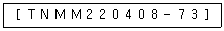
- 인서트 형상
- 여유각
- 공차
- 인서트 두께
(정답률: 32%)
33. CNC 기계에서 절삭력이 과대 해지면 어떤 모터에 과열 현상이 생기는가?
- 이송 모터의 과열
- 절삭유 모터의 과열
- 유압 모터의 과열
- 컨베이어 모터의 과열
(정답률: 56%)
34. 2개의 장치가 서로 정보를 주고 받기 위해 한쪽에서 보낼 때 다른 한쪽이 받을수 있도록 직렬통신을 가능하게 하는 포트는?
- RS232C 포트
- 병렬출력 포트
- 스크린 포트
- 메모리 포트
(정답률: 69%)
35. 키에서 축의 홈이 깊게 파여 축의 강도가 약하게 되기는 하나, 키와 키홈 등이 모두 가공하기 쉽고 키가 자동적으로 축과 보스사이에 자리를 잡을 수 있어 자동차, 공작기계 등의 축에 널리 사용되며 특히 테이퍼 축에 사용하면 편리한 키이는?
- 원뿔 키(cone key)
- 접선 키(tangential key)
- 드라이빙 키(driving key)
- 반달 키(woddruff key)
(정답률: 30%)
36. 머시닝센터에서 자동공구 교환장치(ATC)에서 공구 교환 명령어는?
- M08
- M30
- M28
- M06
(정답률: 23%)
37. 길이 6m의 실축에 400㎏f-m의 비틀림모멘트가 작용할 때 비틀림각이 전체길이에 대하여 약 3° 가 되기 위하여는 축의 지름을 몇 mm 정도로 하면 되는가? (단, 가로탄성계수 G = 810000 ㎏f/㎝2 이다.)
- 약 54㎜
- 약 65㎜
- 약 76㎜
- 약 87㎜
(정답률: 24%)
38. 그래픽에서 도형의 요소인 프리미티브(Primitive)라고 할 수 없는 것은?
- 다각형 기둥
- 원뿔
- 구
- 실린더
(정답률: 24%)
39. 피치원의 직경이 40 ㎝인 기어가 600 rpm으로 회전하고 10 PS를 전달시키려고 한다. 이 피치원 상에 작용하는 힘은 약 몇 kgf인가?
- 29.9
- 44.8
- 59.7
- 119.4
(정답률: 15%)
40. CNC선반의 공구기능 T0603을 바르게 설명한 것은?
- 6번 공구로 보정값 3을 수행
- 3번 공구로 보정값 6을 수행
- 6번 공구로 보정번호 3번의 보정값 수행
- 6번 공구로 보정번호 3번의 보정값 취소
(정답률: 53%)
3과목: 자동제어
41. 제 3과목: 공유압 및 자동제어 여러개의 비트로 표현된 정보를 전송하는 방식에는 직렬 전송과 병렬 전송이 있는데 다음 중 직렬 전송에 관한 설명으로 맞는 것은?
- 여러개의 비트를 한꺼번에 전송하는 방식이다.
- 정보 전달이 고속으로 이루어진다.
- 주로 프린터용이나 계측 제어용으로 사용한다.
- 표준 인터 페이스로는 RS-232C가 있다.
(정답률: 37%)
42. 보기 회로에 대한 설명으로 가장 적합한 것은?
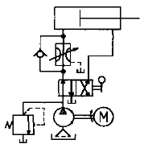
- 동력손실이 적은 회로이다.
- 실린더의 전진속도가 후진 속도보다 빠른 회로이다.
- 실린더의 후진속도가 전진 속도보다 빠른 회로이다.
- 실린더의 입구측에 유량제어 밸브와 체크밸브를 붙여 실린더의 전진행정만을 제어하는 회로이다.
(정답률: 38%)
43. 펌프의 출력에 상관없이 조절 유량만 실린더로 유입되는 회로는?
- 미터인회로
- 미터아웃회로
- 블리드오프회로
- 정마력회로
(정답률: 65%)
44. 다음 중 1공학기압(at)를 표시한 것으로 맞는 것은?
- 735.5 mmHg
- 10.33 mAq
- 1.033 kg/cm2
- 1 atm
(정답률: 43%)
45. NC 공작기계의 구성부를 4개부로 나누었을 때 그 구성부가 아닌 것은?
- 입력부
- 연산 제어부
- 서보 제어부
- 스크류
(정답률: 86%)
46. PLC의 주변기기를 사용하여 프로그램을 메모리에 기억시키는 것을 무엇이라고 하는가?
- 코딩(coding)
- 디버그(debug)
- 로딩(loading)
- 메모리 할당
(정답률: 44%)
47. 다음과 같은 블록선도의 등가 합성 전달 함수는?
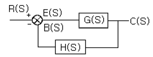
- G(s) / 1-G(s)H(s)
- H(s) / 1-G(s)H(s)
- G(s) / 1+G(s)H(s)
- H(s) / 1+G(s)H(s)
(정답률: 72%)
48. 윤활기의 설명 중 틀린 것은?
- 일반적으로 공압기기는 가변 벤투리식을 사용한다.
- 벤투리의 원리로 작동한다.
- 공압실린더, 밸브 작동을 원활하게 한다.
- 윤활유 입자선별식은 윤활유 계산이 어려운 경우 사용한다.
(정답률: 79%)
49. 순수한 공압으로 시퀀스 제어회로를 구성할 때 신호의 간섭을 제거할 수 있는 방법을 열거한 것 중 틀린 것은?
- 방향성 롤러레버 밸브의 설치
- 상시 닫힘형의 공압타이머 설치
- 캐스케이드 회로의 사용
- 순간 충격 밸브의 사용
(정답률: 48%)
50. 마이컴 프로그램 언어 중 I/O 명령은?
- MOV
- ADD
- JMP
- IN
(정답률: 40%)
51. 12kW의 전동기로 구동되는 유압펌프가 토출압이 70kgf/cm2 토출량은 80 ℓ /min, 회전수가 1200 rpm일 때, 전 효율은 몇 %인가?
- 59
- 68
- 76
- 87
(정답률: 47%)
52. 1차 요소 G(s) = 1 / 1+Ts 인 제어계의 절점 주파수에서의 이득[dB]으로 맞는 것은?
- -3
- -4
- -5
- -6
(정답률: 39%)
53. 액추에이터(Actuator)의 속도를 조절하는 밸브는?
- 감압 밸브
- 유량제어 밸브
- 방향제어 밸브
- 압력제어 밸브
(정답률: 74%)
54. 다음 중에서 서보 모터의 특성을 잘못 설명한 것은?
- 속도 응답성이 커야 한다.
- 제어성이 좋아야한다.
- 빈번한 시동 및 정지 운전이 연속적으로 이루어지더라도 기계적 강도가 커야 한다.
- 관성이 크고, 전기적 또는 기계적 시상수가 커야한다
(정답률: 50%)
55. 다음 중 온도가 일정 할 때 절대 압력과 체적과의 관계는?
- 공기의 체적은 절대 압력에 비례한다
- 공기의 체적은 절대 압력에 반비례한다
- 공기의 체적은 절대 압력의 제곱에 비례한다
- 공기의 체적은 절대 압력의 제곱에 반비례한다
(정답률: 40%)
56. 공작기계의 수치제어 형식 중 공구가 운동할 때 경로, 속도 및 위치를 동시에 제어하는 방법으로 선반, 밀링 등에 쓰이는 제어방식으로 공구 운동의 제어방법에 따라 구분한 제어를 무엇이라고 하는가?
- 위치결정제어
- 공정제어
- 윤곽제어
- 되먹임제어
(정답률: 0%)
57. PLC를 동작시키는데 필요한 고유의 프로그램을 기억하는 부분으로 사용자에 의해 변경이 불가능한 메모리인 것은?
- 프로그램 메모리
- 데이터 메모리
- 제어용 메모리
- 확장 메모리
(정답률: 20%)
58. 공압 발생장치 중 1㎏/㎝2 이상의 토출 압력을 발생시키는 장치는?
- 송풍기
- 팬
- 압축기
- 공기 여과기
(정답률: 50%)
59. 액추에이터(actuator)의 배출저항을 적게하여 운동속도를 빠르게 하는 밸브는?
- 체크밸브
- 셔틀밸브
- 2압밸브
- 급속배기밸브
(정답률: 68%)
60. 다음 그림에서 루브리케이터(lubricator)의 기호는?
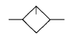
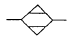
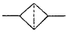
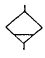
(정답률: 75%)
4과목: 메카트로닉스
61. 4개의 bit가 나타낼 수 있는 0000-1111까지 조건의 수는 모두 몇개가 되는가?
- 4
- 8
- 12
- 16
(정답률: 80%)
62. 차동 실린더에서 면적비 1 : 0.5(피스톤측 면적 : 피스톤 로드측 면적)이라면 피스톤의 후진운동 속도는 전진운동 속도의 몇 배인가?
- 0.5
- 1.5
- 2
- 1
(정답률: 50%)
63. 시스템의 신뢰성을 높이기 위해 전원, 제어선을 결선할 때의 잡음 대책으로 맞는 것은?
- 전원부 배선은 가능한 골고루 꼬여지도록 하고, 2차측 배선과 가까이 둔다.
- 전원부 배선은 2차측(PLC측)과 묶어서 배선한다.
- PLC 전원과 동력기기는 전원계통을 분리하여 배선한다.
- 부하에서 잡음이 많이 생길 때는 실드 트랜스를 사용하면 안된다.
(정답률: 67%)
64. 다음 그림에서 S1과 S2를 동시에 누른 경우 램프에 불이 들어오는 논리회로의 구성방법을 무엇이라고 하는가?
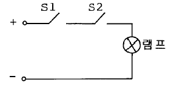
- AND
- OR
- NOT
- NOR
(정답률: 90%)
65. 그림과 같은 계전기 접점회로를 논리식으로 잘 나타낸 것은?
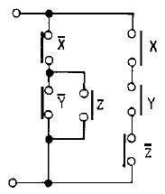
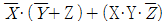
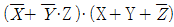
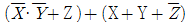
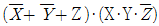
(정답률: 59%)
66. 전동기 과열의 원인이 아닌 것은?
- 과부하
- 결선의 착오
- 단상운전
- 회전자 동봉의 움직임
(정답률: 34%)
67. 짧은 실린더 본체로 긴 행정거리를 낼 수 있는 다단 튜브형의 로드가 있어 작은 공간에 장착하여 긴 행정거리를 요하는 곳에 사용되는 실린더는?
- 충격 실린더
- 케이블 실린더
- 양 로드 실린더
- 텔레스코프 실린더
(정답률: 62%)
68. 다음 중 제어 접점에 접점수가 3개인 경우는?
- a접점
- b접점
- c접점
- d접점
(정답률: 90%)
69. 다음 중 광센서로 사용되는 것만을 나열한 것은?
- 열 전쌍, 초전 센서
- 포토 커플러, 조도센서(CdS)
- 포텐쇼미터, 차동 트랜스
- 초음파 센서, 파이로 센서
(정답률: 66%)
70. 그림과 같은 회로에서 출력 Y가 1이 되기 위한 ABCD의 조건이 아닌 것은?
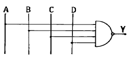
- 0111
- 1000
- 1111
- 0000
(정답률: 67%)
71. 미리 정해진 순서나 조건에 따라 제어의 각 단계를 차례로 진행하는 형식의 제어는?
- PID 제어
- 프로세스 제어
- 폐회로 제어
- 시퀀스 제어
(정답률: 72%)
72.  + A + B 를 간략화 한 것은?
+ A + B 를 간략화 한 것은?
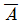
- A
- B
- 1
(정답률: 37%)
73. 시퀀스도 작성시 기본원칙을 설명한 것 중 틀린 것은?
- 전원은 모두 차단한 상태로 나타낸다.
- 수동조작의 기기는 손을 뗀 상태로 나타낸다.
- 기호의 상태는 동작 전의 상태로 표시한다.
- 전원이 on 상태를 나타낸다.
(정답률: 75%)
74. 로터리 인덱싱 테이블을 핸들링 장치로 사용할때 적합하지 않은 경우는?
- 공구를 주기적으로 교체해야 할 때
- 가공물이 여러 공정을 거쳐야 할 때
- 가공물을 한 가공 위치에서 다른 가공 위치로 이송시키며 작업 할 때
- 로드나 스트립 형태의 재질이 길이 방향을 따라 여러가공 공정을 수행 할 때
(정답률: 53%)
75. 파장이 가시광선보다 길고 전파보다 짧은 전자파의 일종으로 자연계에 존재하는 모든 물질은 그것이 가지고있는 온도에 따라서 이것을 방출하는데, 이것을 검출하여 이것으로부터 온도를 구하는 비접촉식 센서로서 가전제품의 리모콘 등에 사용되는 센서는?
- 적외선센서
- 자외선센서
- 자기센서
- 초음파센서
(정답률: 64%)
76. 인가 직류 전압을 변화시켜서 전동기의 회전수를 800rpm으로 하고자 한다. 이 경우 회전수는 다음 중 어느 용어에 해당하는가?
- 목표값
- 조작량
- 제어량
- 제어 대상
(정답률: 32%)
77. 제어 시퀀스를 구성할 때 오동작을 예방하는 방법이 아닌것은?
- 신호의 지연을 방지하기 위해 배관을 가능한 길게한다.
- 가속력이 큰 경우에는 완충장치를 달아 작동력을 흡수토록 한다.
- 먼지와 이물질이 많은 경우에는 자체 정화 커버를 사용한다.
- 큰 부하나 횡방향의 부하를 받는 경우 적절한 마운팅 형태를 선택한다.
(정답률: 83%)
78. 논리식 S=(A+B)· (A+C)에서 간략화하여 논리도를 작성할 때 최소 Gate수는?
- 1개
- 2개
- 3개
- 4개
(정답률: 60%)
79. 다음 논리회로를 보고 PLC 프로그램을 차례로 완성하면( )에 알맞은 입· 출력의 접점번호는? ( 입력은 STR , 출력은 OUT )
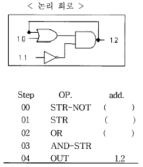
- 1.0 - 1.1 - 1.2
- 1.2 - 1.0 - 1.1
- 1.1 - 1.0 - 1.2
- 1.0 - 1.2 - 1.1
(정답률: 42%)
80. 다음 함수 f(t) = sinωt를 라플라스 변환하면?
- ω / (s2 + ω2)
- s / (s2 + ω2)
- ω / (s2 - ω2)
- s / (s2 - ω2)
(정답률: 43%)